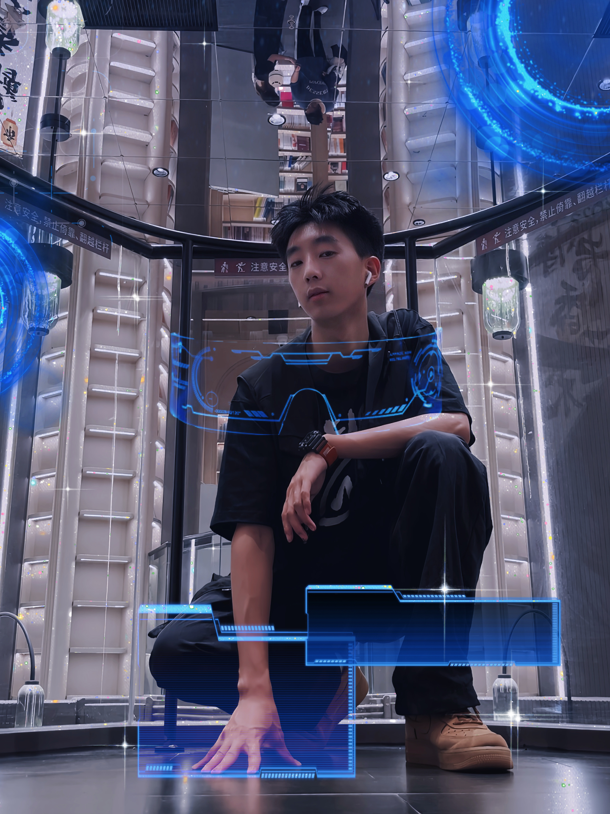
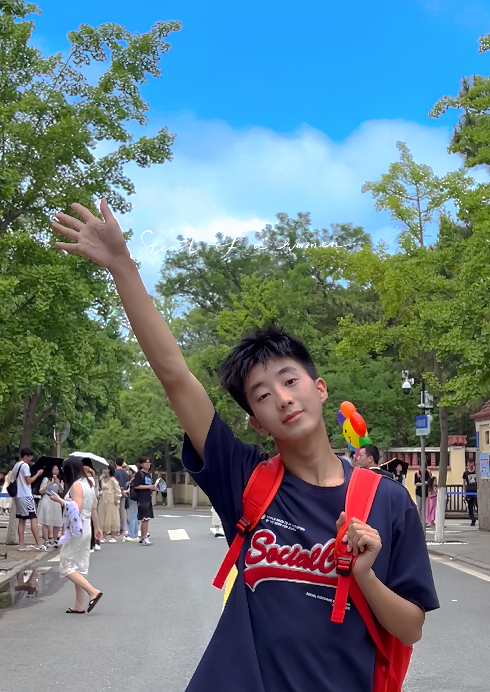

大家好，我是冉嘉伟。本人性格开朗、思维活跃，勇于尝试，积极创新，务实肯千，易于沟通，具有较好团队的意识。。对于本专业有浓厚的兴趣，从基础知口识到专业上的具体知识都掌握得很好，并热衷于了解与专业相关的资讯。有很强的自信心 ，做事目标很明确，并旦把目标放在首位，能正确的认识自己的优点和不足。遇到挫折有韧性，敢于面对现实继续超越自我。遇事不慌张，能分析其原因和形势找出相应的对策。
虽然我是一名理科生，但是在艺术方面我也有浓厚的兴趣。自接触街舞以来，便对它产生了浓厚的兴趣，我会将大量的课余时间都投入练习舞蹈中。舞蹈对我来说不仅是一种爱好，更是一种生活态度。在我面对困难和挑战的时候，舞蹈也是我不可或缺的鼓励和支持。它让我保持积极向上的心态，充满信心和勇气。
与此同时，对音乐也有所热爱，乐于去尝试不同的乐器。